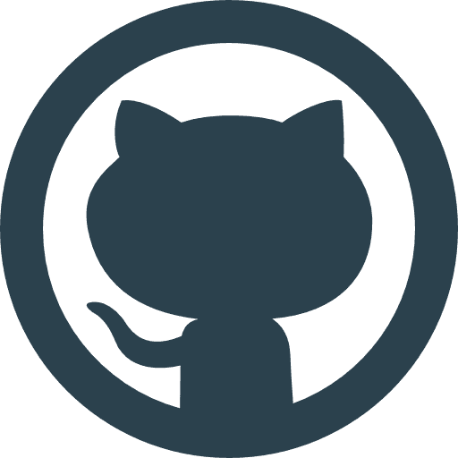

06 29 66 13 89
06 29 66 13 89
 Télécharger le cv
Télécharger le cv
 LyssProGm@gmail.com
LyssProGm@gmail.com
 06 29 66 13 89
Télécharger le cv
LyssProGm@gmail.com
06 29 66 13 89
Télécharger le cv
LyssProGm@gmail.com
 Projet 2: Intégrez la communauté OpenClassrooms.com
Le projet d'ouverture du parcours Développeur d'application Python, Qui nous initie au premier outil un service web d'hébergement et de gestion de développement de logiciels indispensables pour tout Développeur.
Projet 3: Aidez MacGyver à S’échapper
Petit jeu en 2D réalisé sous Python en utilisant la librairie "Pygame".
Projet 4: Analyser les besoins d’OC Pizza
"Oc Pizza" est l'une des pizzerias d’OpenClassRooms, Ils ont besoins d'une analyse en langage 'UML' afin d'apporter des améliorations spécifiques.
Projet 5: Données publiques OpenFoodFacts.com
La start-up "Pur Beurre" as besoin pour l'un de ses restaurant, un programme de substitution, afin d'apporter des améliorations spécifiques. Logiciel utilisant le langage Python exploitant une base de données 'MySQL'. Offrant la possibilité à l'utilisateur de consulter une base de données alimentée via le site réputé "https://fr.openfoodfacts.org".
Projet 6: Concevez la solution technique Oc Pizza (projet 4 en cours)
Suite du projet 4, en cours de réalisation.
Projet personel: Concevoir son curriculum vitae
Curriculum vitae réaliser par mes soins, sans avoir recours aux templates.
Afin de valider mes acquis théoriques via les cours proposer par OpenClassRooms:
Apprenez à créer votre site web avec HTML5 et CSS3